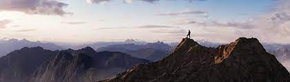

The Summit Chronicles

Embark on a thrilling ascent to the summit of majestic peaks, where every step is a conquest and every view is a reward. Join us in "The Summit Chronicles" as we share tales of overcoming challenges, embracing the elements, and reaching the pinnacle of adventure. Whether it's scaling the heights of the Himalayas or exploring the rugged terrains of Patagonia, these stories will ignite the adventurer within you.